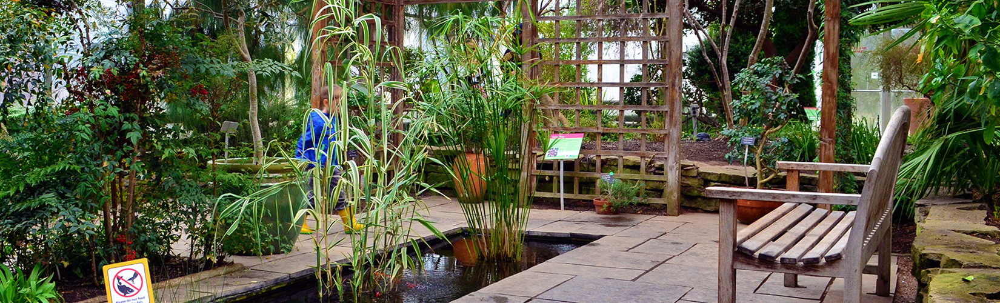

Individual Attractions
If there is a day you'd rather not participate in or if you would like to spend some time by yourself or with your partner then this page is for you!
This is a list and explanation of some of the attractions close to Oakville that are not part of the day trips.
Attractions Super Close to Oakville
These are attractions you can get to easily through Uber or a bus.
-
Hiking in Lions Vally Park: This is a gorgeous hiking trail with a creek running right beside the path. Enjoy Canada's summer weather and summer greenery with this beautiful hike.
-
Pickleball: Oakville parks are home to many pickleball and tennis courts, the closest one is William Rose Park.
-
Gairloch Gardens: This is a beautiful garden with ponds, fountains, and a waterfront view. Great place for pictures.
-
Golf: If you love golf or would just like to try, well good news for you there are approximately a hundred golf courses in the area.
-
Indoor Glow in the Dark Mini Golf: This attraction is very close by and a wonderful little excursion. On top of that it's inside a wonderful plaza with many other attractions and restaurants. Click here to learn more.
-
iFLY Indoor Skydiving: In the same plaza as the Glow in the Dark Mini Golf, indoor skydiving si for those wanting to try a new and exciting experience with a lot less of the risk. Click here to learn more.
-
Aerosports Trampoline Park: Close by is also the trampoline park for the inner child. Get some exercise and have some fun while boucing everywhich way. There are of course the traditional trampolines as well as foam pits and places for attempted tricks! Click here to learn more.
Attractions A Bit Further
These are attractions you may need to take a train or an Uber. They're still kind of close by but may take a little bit to get there.
-
Royal Botanical Gardens: These gardens are wonderfully groomed and taken care of. Not only are the gardens beautiful this place also has a butterfly conservatory. There are several attractions within the RBG:
-
RBG Centre - both indoor and outdoor displays including the Mediterannean Garden greenhouse.
-
Hendrie Park - outdoor cultivated garden area.
-
Rock Garden - Built in 1932 and includes lots of water features for beautiful pictures. There is also the Rock Garden Bistro.
-
Arboretum - more like an English landscape park, this is home to RBG's Lilac collection and a wide variety of trees.
-
Rattlesnake Point Hike: At Rattlesnake point you get gorgeous views with a nice hike. While hiking you can see the Ancient Cedars which are over 800 years old. There is also the Buffalo Crag Lookout Point which looks over the Halton escarpment. FInally, you can walk the Nassagaweya Canyon Trail which connects to Crawford Lake, a cultural heritage hub. Though be forewarned that a roundtrip hike between the parks will take roughly 4-5 hours so either plan to be tired or just choose one conservation area.
-
Crawford Lake: an exceptional park with a beautiful lake. In the deepest part of the lake 75ft below the surface, sediment is deposited in annual layers and remains totally undisturbed. Scientists researching this sediment in the early 1970s discovered corn pollen dating from the 13th to 15th century. This led to the discovery of the archaeological footprints of a Wendat or Attawandaron village. Three longhouses from this village have been reconstructed on their original footprint to help educate the public about the area’s Indigenous history through programs, exhibits, gardens, and workshops developed with Indigenous partners of the park. Here you can walk the Meromictic lake boardwalk (with chances to see turtles) and explore the reconstructed Iroquois village complete with longhouses.
-
Square One Shopping Centre: This is our inclement weather plan as well but if there is no inclement weather this is still a great place to go. Check out the inclement weather page to see more.
Attractions Far Away
These are attractions that are a little less accessible, you will either need an uber or some mix of trains and buses.
-
African Lion Safari: This is a wonderful experience, an open air zoo where you drive through a massize exhibit with african plains animals. Click here to learn more.
-
Evergreen Brick Works: This has been named one of the top 10 ecotourism destinations in the world by National Geographic. There's always something going on at the Brick Works; inclduing interactive workshops, festivals, and a whole range of other programs that bring the community together. The gardens and art gallery are on the historic site of the former Don Vally Brick Works and a quarry - the site that made the bricks that built Toronto. It includes restaurants, markets, shopping, public art, and recreation trails and ponds.
-
Toronto Zoo: A wonderful zoo just a bit out of the city. Come and see a wide array of animals including polar bears, white lions, and a white headed culture (there are only 2 in North America). Click here to learn more.
-
Canada's Wonderland: Canada's best amusement park! They have 18 roller coasters and a large water park. Not to mention, in 2025 they will be opening a new roller coaster: Alpen Fury, going in the botton of wonder mountain in the middle of the park and out the top. Rachel and Steven's favourite rides include Yukon Striker and Behemoth. Click here to learn more.
Copyright ©2025, by Rachel Echevarria-Porter